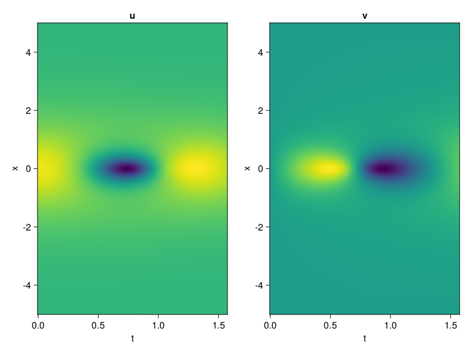
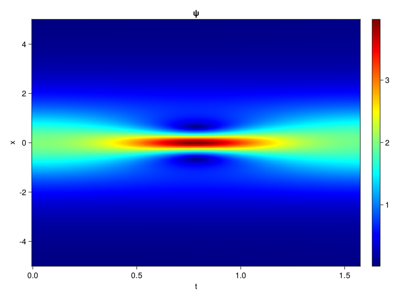
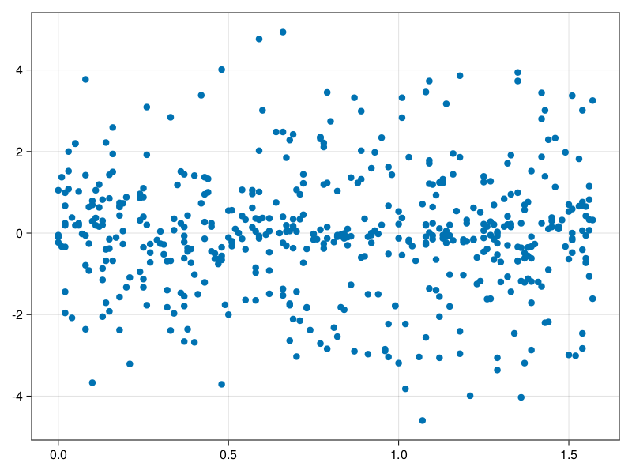

Schrödinger equation
The nonlinear Shrödinger equation is given by
\[\mathrm{i} \partial_t \psi=-\frac{1}{2} \sigma \partial_{x x} \psi-\beta|\psi|^2 \psi\]
Let $\sigma=\beta=1, \psi=u+v i$, the equation can be transformed into a system of partial differential equations
using ModelingToolkit, IntervalSets, Sophon, CairoMakie
using Optimization, OptimizationOptimJL
@parameters x,t
@variables u(..), v(..)
Dₜ = Differential(t)
Dₓ² = Differential(x)^2
eqs=[Dₜ(u(x,t)) ~ -Dₓ²(v(x,t))/2 - (abs2(v(x,t)) + abs2(u(x,t))) * v(x,t),
Dₜ(v(x,t)) ~ Dₓ²(u(x,t))/2 + (abs2(v(x,t)) + abs2(u(x,t))) * u(x,t)]
bcs = [u(x, 0.0) ~ 2sech(x),
v(x, 0.0) ~ 0.0,
u(-5.0, t) ~ u(5.0, t),
v(-5.0, t) ~ v(5.0, t)]
domains = [x ∈ Interval(-5.0, 5.0),
t ∈ Interval(0.0, π/2)]
@named pde_system = PDESystem(eqs, bcs, domains, [x,t], [u(x,t),v(x,t)])\[ \begin{align} \frac{\mathrm{d}}{\mathrm{d}t} u\left( x, t \right) =& - \frac{1}{2} \frac{\mathrm{d}}{\mathrm{d}x} \frac{\mathrm{d}}{\mathrm{d}x} v\left( x, t \right) - \left( \left|u\left( x, t \right)\right|^{2} + \left|v\left( x, t \right)\right|^{2} \right) v\left( x, t \right) \\ \frac{\mathrm{d}}{\mathrm{d}t} v\left( x, t \right) =& \frac{1}{2} \frac{\mathrm{d}}{\mathrm{d}x} \frac{\mathrm{d}}{\mathrm{d}x} u\left( x, t \right) + \left( \left|u\left( x, t \right)\right|^{2} + \left|v\left( x, t \right)\right|^{2} \right) u\left( x, t \right) \end{align} \]
pinn = PINN(u = Siren(2,1; hidden_dims=16,num_layers=4, omega = 1.0),
v = Siren(2,1; hidden_dims=16,num_layers=4, omega = 1.0))
sampler = QuasiRandomSampler(500, (200,200,20,20))
strategy = NonAdaptiveTraining(1,(10,10,1,1))
prob = Sophon.discretize(pde_system, pinn, sampler, strategy)OptimizationProblem. In-place: true
u0: ComponentVector{Float64}(u = (layer_1 = (weight = [-0.48650676012039185 0.4660521149635315; 0.42617785930633545 -0.21153688430786133; … ; 0.11930352449417114 0.07028090953826904; -0.24329328536987305 -0.3564221262931824], bias = [0.0; 0.0; … ; 0.0; 0.0;;]), layer_2 = (weight = [-0.16622129082679749 -0.5045104622840881 … -0.4260203540325165 -0.3836597800254822; -0.6078392267227173 -0.20588909089565277 … 0.46022582054138184 -0.11041957139968872; … ; 0.4977284371852875 0.41699960827827454 … -0.22505974769592285 0.05701519921422005; 0.19551199674606323 -0.3395756781101227 … -0.23318053781986237 -0.4097631573677063], bias = [0.0; 0.0; … ; 0.0; 0.0;;]), layer_3 = (weight = [-0.06136281415820122 0.5670522451400757 … -0.018746303394436836 -0.07425550371408463; 0.009319606237113476 -0.5209840536117554 … -0.2953580319881439 0.5185844302177429; … ; -0.07375442981719971 -0.5203712582588196 … -0.5039839148521423 0.4861500561237335; 0.32537561655044556 0.25525104999542236 … 0.04351821169257164 0.290303111076355], bias = [0.0; 0.0; … ; 0.0; 0.0;;]), layer_4 = (weight = [-0.3218577206134796 -0.3933076858520508 … 0.42130014300346375 -0.4543452560901642; 0.32778221368789673 0.030452368780970573 … -0.035907912999391556 0.3203868269920349; … ; -0.06775926053524017 -0.12189020961523056 … 0.3104064166545868 -0.49217069149017334; -0.335658460855484 0.4299205541610718 … 0.028967466205358505 0.23757421970367432], bias = [0.0; 0.0; … ; 0.0; 0.0;;]), layer_5 = (weight = [-0.20454996824264526 -0.44959497451782227 … 0.0812482163310051 -0.4428670406341553], bias = [0.0;;])), v = (layer_1 = (weight = [0.3746868968009949 -0.3345640301704407; 0.2539570927619934 0.17570436000823975; … ; -0.2783275246620178 0.04644978046417236; 0.317737340927124 0.3573513627052307], bias = [0.0; 0.0; … ; 0.0; 0.0;;]), layer_2 = (weight = [0.11045242846012115 0.1737116426229477 … -0.1731020212173462 -0.4604794383049011; 0.14829134941101074 -0.22052794694900513 … 0.3735455572605133 -0.11374810338020325; … ; 0.5179228186607361 0.5027301907539368 … -0.3153935372829437 -0.19939963519573212; 0.4431250989437103 0.5478655695915222 … 0.41144639253616333 -0.42228731513023376], bias = [0.0; 0.0; … ; 0.0; 0.0;;]), layer_3 = (weight = [0.5366239547729492 -0.31999000906944275 … 0.20767132937908173 -0.5931839942932129; 0.42630088329315186 -0.41282370686531067 … -0.13902181386947632 -0.602616012096405; … ; 0.223307803273201 0.1888982355594635 … 0.3549034297466278 0.2601740062236786; -0.02553388848900795 0.06462214142084122 … -0.10192845016717911 0.57759028673172], bias = [0.0; 0.0; … ; 0.0; 0.0;;]), layer_4 = (weight = [0.027042515575885773 -0.5844215154647827 … 0.2575781047344208 0.12321502715349197; 0.3139513432979584 0.5752840042114258 … 0.5021677613258362 -0.36884835362434387; … ; 0.29139769077301025 0.16064251959323883 … -0.16447927057743073 -0.23183952271938324; -0.5670101046562195 0.3691769242286682 … -0.12139315158128738 -0.08323098719120026], bias = [0.0; 0.0; … ; 0.0; 0.0;;]), layer_5 = (weight = [0.3570266664028168 0.4798070192337036 … -0.11217334121465683 -0.09539104253053665], bias = [0.0;;])))Now we train the neural nets and resample data while training.
function train(pde_system, prob, sampler, strategy, resample_period = 500, n=10)
bfgs = BFGS()
res = Optimization.solve(prob, bfgs; maxiters=2000)
for i in 1:n
data = Sophon.sample(pde_system, sampler)
prob = remake(prob; u0=res.u, p=data)
res = Optimization.solve(prob, bfgs; maxiters=resample_period)
end
return res
end
res = train(pde_system, prob, sampler, strategy)u: ComponentVector{Float64}(u = (layer_1 = (weight = [-0.9665677487612705 0.37709960369504053; 1.2663680958057804 0.5142231155893016; … ; 0.4379165584899923 -0.3028946272080781; -0.2684781373031203 -0.15225516415112159], bias = [-0.15866666022033643; -0.3450243696935148; … ; 0.23861647533412905; 0.17027874560129344;;]), layer_2 = (weight = [-0.37690521499795715 -0.17830804402300474 … -0.2694362585225045 -0.5424136833863107; -0.5543009137595577 -0.17438844800060996 … 0.7947970042304783 0.0060519846455968146; … ; 0.4839634234780823 0.501282989897589 … -0.14827622159883397 -0.019562464305033063; -0.06314965909248371 -0.10193892279530814 … -0.2101051233114253 -0.42533842078359557], bias = [0.4497201689626319; 0.010528570240510822; … ; 0.022811155559095495; 0.26120622286553885;;]), layer_3 = (weight = [0.12994625671144006 0.7335879187763796 … -0.3017076192644835 -0.31158045684101143; 0.04553770158192879 -0.5954483855434729 … -0.16814125704034685 0.7152268932742873; … ; -0.22467297770743605 -0.5079971507870007 … -0.450312482931282 0.38859522532860097; 0.16741274643196594 0.10877959821227712 … 0.05944956508582109 0.3079145141496839], bias = [-0.2762125984826071; -0.1406046404140902; … ; -0.19711455858531812; -0.10771763943018317;;]), layer_4 = (weight = [-0.11013544185093377 -0.19917177024965468 … 0.4128053214971523 -0.7277725788051679; 0.11690153100157558 0.2879031611940889 … 0.13557776339848862 0.41577217694484103; … ; -0.15527457426170377 0.26459617051963935 … 0.3757629192824286 -0.6359892512242813; -0.006170423505385252 0.5153900552046305 … -0.2593295005867159 0.031255295064288584], bias = [0.3844463174961735; -0.0986445579003337; … ; -0.37499064953349215; -0.13861693747749432;;]), layer_5 = (weight = [-0.5351256456496726 -0.36996791295250514 … 0.2801938314062526 -0.343517136264717], bias = [0.1482706297494238;;])), v = (layer_1 = (weight = [0.3273233030411885 0.03701253002049385; 0.3854399474879225 0.15397066559174558; … ; -0.28377618548893674 0.14964247418029877; 0.6934966199014462 0.5081540271834737], bias = [-0.05096433020583423; -0.12497626747993927; … ; -0.006302960495126446; -0.3749719052275036;;]), layer_2 = (weight = [0.0031867935041404553 0.02518920255921531 … -0.053187827121886216 -0.48468287826430057; 0.28179999668293226 -0.4447835465393588 … 0.08598373972116444 -0.6022469036863565; … ; 0.4888926888197919 0.4043793077544216 … -0.18959627451021446 -0.12112147586766026; 0.5628808657286616 0.7916239773748982 … 0.2234180515909584 -0.10892138837910427], bias = [0.04605377114274984; 0.5607773761304232; … ; -0.25200677005383415; 0.18155808748816377;;]), layer_3 = (weight = [0.11584035768907855 0.08155755001675148 … 0.060552138854956285 -0.13349015585338828; 0.024969474961505714 -0.45278911698080704 … -0.13037359289152875 -0.40834061118712595; … ; 0.16166540900884355 0.5267751702534216 … 0.19803761751976828 0.49242605990219396; 0.4477283119989362 0.3093630914236703 … 0.05892090753827735 1.0286807683501238], bias = [0.2268732569578568; 0.1266739459223072; … ; -0.4080313519382135; -0.3549952163784722;;]), layer_4 = (weight = [-0.022922459520998195 -0.36104904889350525 … 0.5323787184399505 0.05433463758546149; 0.8632714319571283 0.5615070763804504 … 0.18476367371293967 -0.4814230268848922; … ; 0.17722733507325647 0.2726815715548033 … -0.11522034700493354 -0.39226631153280944; -0.49873856956493995 0.4514724524767989 … -0.1101156769737051 0.11570025973832376], bias = [-0.307519258800485; -0.1366037672671506; … ; 0.3543750842410485; 0.034587597115079284;;]), layer_5 = (weight = [-0.18607712588165493 0.24208399539369427 … -0.1683390234240912 0.46985910200449743], bias = [-0.034060232864680184;;])))phi = pinn.phi
ps = res.u
xs, ts= [infimum(d.domain):0.01:supremum(d.domain) for d in pde_system.domain]
u = [sum(phi.u(([x,t]), ps.u)) for x in xs, t in ts]
v = [sum(phi.v(([x,t]), ps.v)) for x in xs, t in ts]
ψ = @. sqrt(u^2+ v^2)
axis = (xlabel="t", ylabel="x", title="u")
fig, ax1, hm1 = heatmap(ts, xs, u', axis=axis)
ax2, hm2= heatmap(fig[1, end+1], ts, xs, v', axis= merge(axis, (; title="v")))
display(fig)
axis = (xlabel="t", ylabel="x", title="ψ")
fig, ax1, hm1 = heatmap(ts, xs, ψ', axis=axis, colormap=:jet)
Colorbar(fig[:, end+1], hm1)
display(fig)
Customize Sampling
Bascially any sampling method is supportted. For example we can sample data according to the predicted solution.
using StatsBase
data = vec([[x, t] for x in xs, t in ts])
wv = vec(ψ)
new_data = wsample(data, wv, 500)
new_data = reduce(hcat, new_data)
fig, ax = scatter(new_data[2,:], new_data[1,:])
prob.p[1] = new_data
prob.p[2] = new_data
prob = remake(prob; u0 = res.u)
# res = Optimization.solve(prob, bfgs; maxiters=1000)OptimizationProblem. In-place: true
u0: ComponentVector{Float64}(u = (layer_1 = (weight = [-0.9665677487612705 0.37709960369504053; 1.2663680958057804 0.5142231155893016; … ; 0.4379165584899923 -0.3028946272080781; -0.2684781373031203 -0.15225516415112159], bias = [-0.15866666022033643; -0.3450243696935148; … ; 0.23861647533412905; 0.17027874560129344;;]), layer_2 = (weight = [-0.37690521499795715 -0.17830804402300474 … -0.2694362585225045 -0.5424136833863107; -0.5543009137595577 -0.17438844800060996 … 0.7947970042304783 0.0060519846455968146; … ; 0.4839634234780823 0.501282989897589 … -0.14827622159883397 -0.019562464305033063; -0.06314965909248371 -0.10193892279530814 … -0.2101051233114253 -0.42533842078359557], bias = [0.4497201689626319; 0.010528570240510822; … ; 0.022811155559095495; 0.26120622286553885;;]), layer_3 = (weight = [0.12994625671144006 0.7335879187763796 … -0.3017076192644835 -0.31158045684101143; 0.04553770158192879 -0.5954483855434729 … -0.16814125704034685 0.7152268932742873; … ; -0.22467297770743605 -0.5079971507870007 … -0.450312482931282 0.38859522532860097; 0.16741274643196594 0.10877959821227712 … 0.05944956508582109 0.3079145141496839], bias = [-0.2762125984826071; -0.1406046404140902; … ; -0.19711455858531812; -0.10771763943018317;;]), layer_4 = (weight = [-0.11013544185093377 -0.19917177024965468 … 0.4128053214971523 -0.7277725788051679; 0.11690153100157558 0.2879031611940889 … 0.13557776339848862 0.41577217694484103; … ; -0.15527457426170377 0.26459617051963935 … 0.3757629192824286 -0.6359892512242813; -0.006170423505385252 0.5153900552046305 … -0.2593295005867159 0.031255295064288584], bias = [0.3844463174961735; -0.0986445579003337; … ; -0.37499064953349215; -0.13861693747749432;;]), layer_5 = (weight = [-0.5351256456496726 -0.36996791295250514 … 0.2801938314062526 -0.343517136264717], bias = [0.1482706297494238;;])), v = (layer_1 = (weight = [0.3273233030411885 0.03701253002049385; 0.3854399474879225 0.15397066559174558; … ; -0.28377618548893674 0.14964247418029877; 0.6934966199014462 0.5081540271834737], bias = [-0.05096433020583423; -0.12497626747993927; … ; -0.006302960495126446; -0.3749719052275036;;]), layer_2 = (weight = [0.0031867935041404553 0.02518920255921531 … -0.053187827121886216 -0.48468287826430057; 0.28179999668293226 -0.4447835465393588 … 0.08598373972116444 -0.6022469036863565; … ; 0.4888926888197919 0.4043793077544216 … -0.18959627451021446 -0.12112147586766026; 0.5628808657286616 0.7916239773748982 … 0.2234180515909584 -0.10892138837910427], bias = [0.04605377114274984; 0.5607773761304232; … ; -0.25200677005383415; 0.18155808748816377;;]), layer_3 = (weight = [0.11584035768907855 0.08155755001675148 … 0.060552138854956285 -0.13349015585338828; 0.024969474961505714 -0.45278911698080704 … -0.13037359289152875 -0.40834061118712595; … ; 0.16166540900884355 0.5267751702534216 … 0.19803761751976828 0.49242605990219396; 0.4477283119989362 0.3093630914236703 … 0.05892090753827735 1.0286807683501238], bias = [0.2268732569578568; 0.1266739459223072; … ; -0.4080313519382135; -0.3549952163784722;;]), layer_4 = (weight = [-0.022922459520998195 -0.36104904889350525 … 0.5323787184399505 0.05433463758546149; 0.8632714319571283 0.5615070763804504 … 0.18476367371293967 -0.4814230268848922; … ; 0.17722733507325647 0.2726815715548033 … -0.11522034700493354 -0.39226631153280944; -0.49873856956493995 0.4514724524767989 … -0.1101156769737051 0.11570025973832376], bias = [-0.307519258800485; -0.1366037672671506; … ; 0.3543750842410485; 0.034587597115079284;;]), layer_5 = (weight = [-0.18607712588165493 0.24208399539369427 … -0.1683390234240912 0.46985910200449743], bias = [-0.034060232864680184;;])))